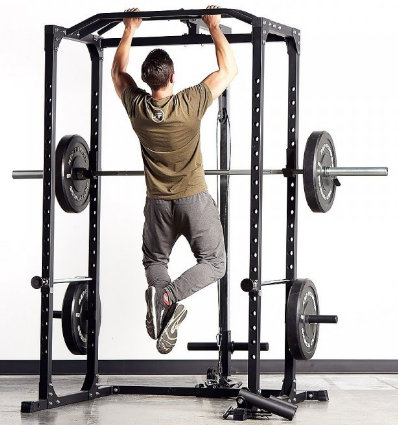

Cómo hacer dominadas: beneficios, técnica y variantes [Guía 2021]
 Saltar al contenido Programas Cursos Blog APP EntrenamientoCómo hacer dominadas: beneficios, técnica correcta y variantes
junio 29, 2017Si estás buscando un ejercicio que mejore tu core, tu espalda y la fuerza de tus brazos en tiempo record no lo dudes: aprende cómo hacer dominadas.
Las dominadas aportarán sin lugar a dudas un salto cualitativo a tus entrenamientos además de ser uno de los paradigmas de la funcionalidad pues no hay nada más funcional que levantar tu propio cuerpo.
Es cierto que se considera un ejercicio exigente pero no queremos que sea una barrera para ti así que hemos incluido una sección de cómo empezar a introducirte en el mundo de las dominadas independientemente del nivel que tengas y te enseñamos cómo hacer dominadas estrictas.
Si eres un experto, no te pierdas la sección del artículo en la que te mostramos con vídeos muchas variantes de dominadas para que perfecciones tu técnica y obtener más resultados.
En este artículo encontrarás:
Qué son las dominadas Beneficios de las dominadas Tipos de dominadas Tipos de agarre en las dominadas Anchos de agarre en las dominadas Clasificación por agarre y ancho de agarre en las dominadas Qué músculos trabajan las dominadas Músculos trabajados en las dominadas pronadas Dominadas supinas Dominadas neutras Empezar a hacer dominadas Nivel 1: Flexiones manos arriba con rodillas Nivel 2: Remo con el propio peso Nivel 3: Dominadas asistidas Nivel 4: Dominadas negativas Cómo hacer dominadas correctamente Recomendaciones para hacer dominadas Errores comunes al hacer dominadas Ejercicios de dominadas Ejercicios con barras Ejercicios combinados con barras Ejercicios para otras zonas del cuerpoQué son las dominadas
Las dominadas son ejercicios que consisten en levantar el cuerpo mientras este pende de una barra. Mediante diferentes agarres de las manos, se parte con los brazos estirados y solicitando la fuerza de brazos espalda y abdomen, se lleva la barbilla a la altura de la barra.
Pertenecen al grupo de ejercicios de autocarga (en otras palabras, a los ejercicios que utilizan tu propio peso corporal como carga) con la característica que en este caso la carga es en general el peso total del cuerpo por lo que se requiere cierto nivel y control de los músculos que se trabajan en el ejercicio.
Muchas veces hemos hablado de la actividad física como una herramienta indispensable del ser humano para su supervivencia.
Las dominadas son el paradigma de este concepto.
👉 Debemos ser capaces de cargar con nuestro propio cuerpo si queremos escalar un árbol para escapar de un depredador o entrar por la ventana de casa si nos hemos dejado las llaves.
Existen múltiples variables del mismo ejercicio que nos aportarán matices diferentes y te permitirán evolucionar en tu técnica y rendimiento. A lo largo de este artículo desarrollaremos todas estas variables para que te conviertas en un auténtico experto en este ejercicio y sepas realmente cómo hacer dominadas.
Y puedes tener el mejor programa de entrenamiento que las incluye a través de este botón:
Probar la App de Mammoth HuntersBeneficios de las dominadas
Las dominadas son un excelente ejercicio de fuerza, es muy completo y trabaja uno de los puntos débiles de muchos usuarios, la movilidad de la cintura escapular.
Debido a que pasamos muchas horas sentados delante del ordenador en una posición de brazos estáticos nuestros hombros se vuelven rígidos poco móviles y nuestro omoplato ni se mueve con facilidad ni es capaz de funcionar como el potente anclaje de fuerzas para el que fue diseñado.
Con las dominadas:
Te pones fuerte. Definitivamente las dominadas son una autopista hacia la recuperación y mejora de tu proporción muscular. Como hemos comentado durante este ejercicio, movilizas el peso de tu cuerpo en cada repetición así que a tu cuerpo no le queda más remedio que acercarse a la mejor versión de sí mismo para poder realizar este ejercicio.
Hacer dominadas te posiciona directamente en un nivel de fitness elevado. Verás que muchas personas de tu entorno no son capaces de realizar ni una sola repetición.
Trabaja el core, mejora tu figura y el balance de tu musculatura. Todo en uno, los músculos de la espalda son de los que menos se trabajan y las dominadas las trabajan casi íntegramente (ver siguiente sección de músculos trabajados), además estabiliza el tronco y requiere de fuerza abdominal, por lo que después de las dominadas verás un cuerpo tonificado y con una musculatura más balanceada.
Mejora tu postura y reduce dolor de espalda. Por el especial cuidado que se realiza durante la ejecución de este ejercicio, la espalda adquiere una postura recta durante cada repetición y los brazos pueden estar completamente extendidos por encima tu cabeza. Si tienes una espalda curva, verás cómo tu postura mejora y los dolores lumbares se van aliviando ya que las vértebras se descomprimen.
Ahorra tiempo. Igual que tienes los Burpees para aquellos días que quieres trabajar metabólico y no tienes tiempo para salir a correr, las dominadas son para un trabajo expreso pero muy completo de fuerza. Si no tienes tiempo para realizar una sesión entera, 50 dominadas son una excelente alternativa.
Tipos de dominadas
Las dominadas tienen diferentes tipos basados principalmente la forma en la forma en la que uno se sujeta a la barra.
A simple vista puede parecer un detalle menor. NO LO ES.
La orientación que tendrán nuestras manos al realizar cada repetición y la distancia entre ellas determinarán qué músculos serán más protagonistas en el ejercicio.
Hoy vamos a conocer todas las variantes de agarres posibles para elegir cuál es el mejor para ti y los objetivos que estás buscando.
Tipos de agarre en las dominadas
Los tipos de agarre que existen son 3, siendo los dos primeros más populares:
Agarre prono.Para realizarlo, las palmas de las manos deben mirar hacia fuera (es decir, en la misma dirección hacia la que miras). Se puede realizar con el dedo pulgar sujetando la barra por abajo como en la imagen de abajo o para un mayor nivel de dificultad con el dedo por encima de la barra. Agarre supino.
Las palmas de la mano miran hacia dentro (es decir, hacia ti). Este tipo de agarre permite enfocar en otros músculos como los bíceps y tienden a ser de menor dificultad. Agarre neutro.
Las palmas de las manos se miran una a la otra. Muchos entrenadores recomiendan este tipo de agarre porque es la que en porcentaje tiene menor riesgo de lesión (pero no se ha comprobado con estudios que sea por el agarre o por la técnica durante la dominada).
Anchos de agarre en las dominadas
El ancho del agarre significa la longitud que existe entre las manos. Como nadie lleva una regla para hacer ejercicio y, evidentemente, no tendrás manos para medir cuando estés sujetándote en la barra usaremos como punto referencial los hombros.
Para saber cómo hacer dominadas y elegir las que tengan más beneficios debes saber que, en general, el ancho del agarre tiene menos impacto que el tipo de agarre sobre la actividad muscular.
En los estudios realizados por EMG,tanto las fibras del infraespinoso, el dorsal ancho y las porciones bajas y medias del trapecio apenas varían con la distancia del agarre. Sí que es verdad que a más estrecho el agarre más actividad del bíceps braquial.
Clasificación por agarre y ancho de agarre en las dominadas
Neutro Supino con agarre cerrado Prono agarre amplio (que dependiendo de la extensión puede ser lesivo) Prono con ancho biacromial Supino con ancho biacromialQué músculos trabajan las dominadas
Al aprender cómo hacer dominadas, te darás cuenta de que es un ejercicio multiarticular, que implica un movimiento de tracción vertical posible gracias al involucramiento de casi todos los músculos de la parte posterior del torso, los pectorales y los abdominales.
Entre los músculos involucrados encontramos:
Aunque la lista es larga podemos afirmar que el músculo que más trabaja en este ejercicio es el dorsal ancho.
Al dorsal ancho le acompañarán otros músculos según el tipo de agarre que escojamos.
Si el agarre es supino , acompañarán al dorsal, el pectoral mayor y el bíceps braquial.
En el agarre pronado en cambio subes la intensidad del trabajo del dorsal ancho, y también trabajas las fibras bajas del trapecio y el infraespinoso.
Con un agarre neutro la intensidad de trabajo del dorsal ancho es similar a la del agarre supinado así como también la del pectoral mayor.
También existe la posibilidad de un agarre rotatorio . De esta manera, conseguirás una activación completa de las fibras del dorsal ancho (130%), esto es más que con cualquier otra variante de las dominadas, por ejemplo las dominadas supinas “únicamente” reclutan un 117% de las fibras del dorsal ancho y las pronadas un 125%.
Músculos sinergistas
Los sinergistas son músculos que se activan para ayudar al dorsal ancho a realizar su trabajo apropiadamente. En este caso los músculos implicados en las dominadas son el braquial, braquiorradial y el bíceps.
Otros sinergistas en segunda línea son los romboides de la espalda, los deltoides posteriores de los hombros, el pectoral menor y el trapecio inferior y medio de la espalda.
Además de los músculos reclutados para realizar el movimiento requerimos de un grupo complementario que cubran la función de estabilizar la articulación en todo el rango de movimiento principalmente los músculos serrato mayor y porción larga del tríceps.
Estos músculos ayudarán en la aducción del hombro y en la extensión del codo.
Para verlo de manera más global una imagen nos ayudará mucho a encontrar las diferencias más notables.
Músculos trabajados en las dominadas pronadas
Como vemos en la imagen, los músculos que se activan más son los músculos traseros del tren inferior, y un poco por detrás los músculos de los brazos resaltando el bíceps.
Además en la parte frontal trabaja el núcleo abdominal que se contrae durante la ejecución del movimiento.
Dominadas supinas
La dominada supina tiene en común con la dominada prona la activación del dorsal ancho (ciertamente con una intensidad menor) y la mayor diferencia es que el bíceps deja de ser un actor secundario para ganar más protagonismo.
Dominadas neutras
En lo que respecta a las dominadas con agarre neutro, las fibras activadas en cada músculo es muy similar a las dominadas pronadas o pronas y la implicación del bíceps braquial casi idéntica a la de la dominada supina. Es decir, es un intermedio entre las dominadas vistas anteriormente.
Probarla ahoraEmpezar a hacer dominadas
Las dominadas son ejercicios desafiantes y eso es lo que los hace más atractivos y están al alcance de todos si nos preparamos para ello.
Uno de los puntos más importantes es que para poder levantar el peso total del cuerpo es necesario tener fuerza en los músculos del brazo y en los de la espalda.
Surge la pregunta entonces: ¿Cómo hacer dominadas si todavía no tengo suficiente fuerza?
Pues esa es la respuesta: haciendo que tu cuerpo se ponga más fuerte.
Si no puedes hacer ni una dominada es mejor empezar paso a paso con ejercicios que te ayuden a ganar fuerza en los músculos implicados en las dominadas antes de saltar a sujetarte en la barra, es decir conocer cómo hacer dominadas antes de intentar hacerlas.
Particularmente, lo que yo recomiendo siempre es descargar la app Mammoth Huntersás de que además de los ejercicios en barra, también incluye muchos tipos de sesiones HIIT de entrenamiento funcional que te harán ganar mucha fuerza, elasticidad y movilidad.
Para crearte una cuenta solo debes presionar este botón:
Probar la App de Mammoth HuntersAdemás, aquí te dejo una lista de ejercicios dependiendo de tu nivel físico para acostumbrarte a ciertos movimientos y trabajar los músculos de la espalda.
👉 Si alguno te parece muy fácil como para realizar 3 series de 8 repeticiones con un descanso de 30 segundos entre ellas, salta al siguiente nivel.
Nivel 1: Flexiones manos arriba con rodillas
El ejercicio de flexiones manos arriba se realiza de la siguiente manera:
Túmbate boca abajo con las palmas apoyadas en el suelo a la altura del pecho. Impúlsate con las manos para elevar el tronco manteniendo el cuerpo alineado y paralelo al suelo (con espalda recta). Las rodillas permanecen en el suelo pero los pies están elevados. Cuando el pecho contacte con el suelo separa las manos del suelo dejando el peso sobre los músculos del pecho. Apoya las manos y realiza el punto 2 para hacer una nueva repetición.Puedes aprender a realizar la técnica mirando este video.
Nivel 2: Remo con el propio peso
Si no tienes una barra que puedes colocar sobre cualquier puerta de la casa, puedes realizar este ejercicio con la mesa.
Este ejercicio replica movimientos similares a los que haces en las dominadas, sobre todo en la posición superior, ya que trabaja la misma musculatura pero en un ángulo diferente y con parte del peso corporal apoyado sobre las piernas (por lo que la intensidad no es la misma).
Para hacerlo debes:
Nivel 3: Dominadas asistidas
En este tipo de dominadas lo importante es mantener la técnica durante todo el movimiento ya que parte del peso corporal que estás usando como carga será disminuido por los siguientes elementos: una superficie de apoyo como una silla, por una banda elástica de ejercicios o por una persona que te ayude.
Para saber cómo hacer dominadas asistidas, te dejamos los siguientes consejos:
Dominadas asistidas con una silla o superficie
Puedes apoyar en principio los dos pies, aunque la idea es que con solo uno ya sea suficiente soporte. Recuerda que la silla servirá de apoyo inicial, pero que debes dejar que los brazos y la espalda hagan la mayor parte del trabajo.
Dominadas asistidas con banda de ejercicio
Se pueden utilizar diferentes tipos de bandas de ejercicio, con diferentes niveles de fuerza y de tensión. Debes colocar un pie en la banda para tener un apoyo y llevar todo el trabajo y esfuerzo hacia el tren superior para que el ejercicio sea efectivo.
Dominadas asistidas con un compañero
Pídele a alguien que sostenga los pies desde atrás, de preferencia solo el empeine y úsalo como apoyo. Al igual que en las dos anteriores, el ejercicio es mucho más efectivo cuando se usa más los brazos y espalda que el apoyo.
Además, antes de iniciar cada repetición debes indicarle a tu compañero que te brinde la menor ayuda posible para llegar a terminar cada repetición de manera que la exigencia es para ti y no para tu compañero.
👉 En general, si recién empiezas y solo puedes realizar la dominada apoyando las dos piernas, hazlo; cuando domines este ejercicio, apoya solo un pie.
Cuando sepas cómo hacer dominadas bien, agradecerás haber realizado estos ejercicios de preparación.
Nivel 4: Dominadas negativas
Una dominada negativa es como la dominada clásica pero hecha al revés.
Es decir, que después de tomar impulso con un salto y llegar a la posición superior, se enfoca el trabajo en la bajada que se hace lo más lento posible, para mantener el control total del movimiento y ayuda a ganar fuerza en los músculos de la espalda y también en los brazos .
Si quieres obtener mejores resultados, en vez de saltar puedes usar una superficie elevada como una silla para llegar a la posición superior, así te aseguras iniciar en la posición superior ideal.
👉 Para este ejercicio puedes realizar entre 3 y 4 series de 5 repeticiones cada una. Esta la puedes ir combinando con las dominadas usando el borde la mesa.
Esto también se puede combinar con dominadas isométricas que son básicamente mantener una posición de la dominada durante unos segundos. Por ejemplo, puedes quedarte justo en la mitad de la bajada con un agarre supino o en la posición superior con un agarre prono.
Es hora de empezar el camino para saber cómo hacer dominadas y aprender variantes de dominadas como el Muscle up.
Cómo hacer dominadas correctamente
Es importante saber que si ves una barra no debes ir corriendo a intentar hacer dominadas.
Para saber cómo hacer dominadas lo primero que debes saber es que este ejercicio involucra una importante cantidad de articulaciones y músculos trabajando en conjunto en un alto esfuerzo.
Para preparar tu cuerpo para hacer dominadas es importante realizar un calentamiento previo antes y dejar el cuerpo en estado óptimo para rendir óptimamente ante el desafío en el que si quieres incluir estiramientos solo pueden ser dinámicos, los estiramientos estáticos podrían incrementar el riesgo de lesiones como puedes ver en nuestro artículo sobre estiramientos musculares .
Si quieres saber cómo calentar, aquí podrás encontrar nuestra guía de calentamiento .
Para hacer dominadas estrictas (agarre prono) debes colgarte de una barra fija con las manos un poco más abierta que la separación entre tus hombros. Las manos deben mirar hacia el frente y si deseas subir la intensidad el dedo pulgar debe estar sobre la barra y no rodeándola. También si nos enfocamos en que el dorsal ancho trabaje más, es mejor fijar la escápula hacia abajo y hacia atrás . Inhala aire por las fosas nasales antes de iniciar el movimiento. Ejecuta la tracción del cuerpo entero f lexionando los brazos y contrayendo los músculos de la espalda sin tensionar el cuello . El movimiento de elevación debe ser tan explosivo como te sea posible para tener mejores resultados y debes espirar durante la subida en los momentos de mayor esfuerzo. El movimiento de tracción debe finalizar cuando la totalidad del rostro supere la altura de la barra sin perder la postura recta del cuerpo, sin encoger los hombros y manteniendo las piernas relajadas contrayendo los glúteos para una mejor activación abdominal (de preferencia tener las piernas estiradas salvo que al bajar toquen el suelo, en este caso es mejor mantener las rodillas dobladas). Desciende de forma controlada hasta que tus brazos queden estirados totalmente y puedas subir las escápulas ligeramente antes de la siguiente repetición. Durante el descenso es importante inhalar para estar listo para la siguiente repetición.En este video puedes ver cómo hacer dominadas correctamente:
Recomendaciones para hacer dominadas
Controla tu peso. Este es uno de los ejercicios de autocarga o bodyweight que usa por completo tu peso corporal. Si quieres tener un mejor rendimiento lo mejor es complementarlo con una dieta que cumpla con dos características: ayuda a controlar tu peso y te proporciona energía suficiente para una actividad física demandante.
El tipo de dieta que mejor cumple con estas características es la dieta paleo .
Elige bien la barra. Si vas a un gimnasio, verifica que la barra es suficientemente estable y que no sea muy delgada para poder tener un mejor agarre.
Si no tienes barra, tienes dos opciones. Colocar una en el marco de la puerta o colocarla en la pared. Cada una tiene sus ventajas y desventajas.
La del marco de la puerta tiene como ventaja que tendrás espacio por el frente y por detrás pero tiene la desventaja de que necesitas que el marco de la puerta sea apropiado y que sea alto para poder realizar una dominada sin necesidad de doblar las rodillas.
Si te interesa adquirir una, puedes comprar la que tengo en este enlace .
La de la pared tiene como ventaja que los modelos permiten hacer agarres neutros y que puedes colocarlos a la altura que quieras (el límite es el techo). Las desventajas son para desmontarlos si ya no los quieres y que la pared te queda muy cerca.
Mi recomendación es elegir una fácil de montar, que aguante 120 kilos sin problema y que no sea tan grande. Esta me parece una buena opción económica .
Si quieres ir al siguiente nivel y poder variar el agarre supino y prono en la misma repetición, puedes intentarlo con anillas. Pero, recuerda, usar las anillas es el siguiente nivel.
Si recién estás empezando con las dominadas mejora tu fuerza y técnica antes. Si eres un experto, ¿qué estás esperando?, te recomiendo comprar estas anillas (mejor las de 32mm).
Calienta antes. Es tan importante que te lo mencionamos dos veces en el mismo artículo. Las dominadas implican un alto esfuerzo de varios grupos musculares. Un calentamiento apropiado no solo te alejará de las lesiones sino que mejorarán tu rendimiento. No te saltes ningún calentamiento antes de hacer dominadas.
No encojas los hombros. Así no solo tendrás que usar más fuerza al realizar la tracción sino que evitarás sobrecargar algunos músculos como el supraespinoso que suele ser el talón de Aquiles de muchos deportistas.
La fuerza mental es tan importante como la fuerza física. Al ser un ejercicio desafiante, debes considerar que los progresos no suceden en una semana, pero esta semana te prepara para la siguiente, y esta para la siguiente, hasta que eres un experto de las dominadas. Mantén tu objetivo en mente y no te rindas. Recuerda que los progresos no llegan a ti, tú llegas a ellos.
Cuida la técnica. Ejecutar bien las dominadas es importante no solo para evitar lesiones, sino porque la única forma de obtener el máximo rendimiento de tu cuerpo y todos los beneficios de las dominadas es manteniendo la postura y realizar el esfuerzo completo del ejercicio.
👉 ¿De qué sirve hacer 10 mal hechas si luego tus músculos no se ponen tan fuertes como haciendo 3 bien hechas?
Varía el agarre. No hay agarre mejor o peor, o tipo de dominada más efectivo. Cada dominada tiene una función y activa en mayor o menor medida otros músculos.
Alternar el agarre entre una sesión u otra, o en la misma sesión, conseguirá dos cosas:
Tu cuerpo no se acostumbrará a solo un tipo de movimiento y así cada repetición tendrá un mayor impacto Mejora tu coordinación ya que el cuerpo debe estar preparado para realizar diversos tipos de movimientos involucrando diferentes músculos. Tendrás una figura más compensada porque trabajarás una mayor cantidad de músculos de la espalda, los pectorales, y un amplio grupo de músculos del tren superior de manera equilibrada.Mejora el sticking point. Lo que se conoce como sticking point es el momento del movimiento en la que al cuerpo le cuesta hacer más fuerza en un ejercicio. Para todos en general el sticking point al hacer dominadas se encuentra en el momento de sobrepasar la altura de la barra.
Para mejorar en este punto se puede complementar con ejercicios isométricos, es decir, al terminar de hacer dominadas puedes mantenerte unos 20 segundos en la posición superior de las dominadas, y repetir esta rutina hasta que la tengan completamente dominada.
Es decir, hasta que tengas dominadas las dominadas.
Varía usando una toalla o un agarre ancho. Si sientes que al hacer dominadas los antebrazos se están sobrecargando, es ideal hacer unas cuantas dominadas usando la toalla para empezar a exigir más el antebrazo y hacer que gane más fuerza, así no será una limitación en el futuro para incrementar la cantidad de dominadas que podrás hacer en tus sesiones de entrenamiento en casa .
No le temas a los callos. Al empezar a trabajar con barras, todos vamos endureciendo la piel de la mano justo antes de donde empiezan los dedos.
Es normal, yo las he tenido y luego van desapareciendo poco a poco.
Sin embargo, si prefieres no tener ningún tipo de formación callosa en las manos por una cuestión estética, puedes optar por unos guantes para dominadas. Por un tema de agarre, incluso si yo prefiero hacerlo con las manos desnudas, mis amigos suelen usar estas .
Come bien. La nutrición es fundamental para aumentar musculatura y ganar fuerza. Con una nutrición inadecuada tu cuerpo estará en modo catabólico (destinará los aminoácidos a varias funciones pero no a crear músculo), por lo que te recomiendo que revises mi guía para crear tu dieta para ganar masa muscular .
Conócete bien. Te recomiendo hacer el diagnóstico gratuito de Mammoth Hunters para conocer mejor tu condición física y cuánto tiempo te tomará llegar a tu objetivo.
Errores comunes al hacer dominadas
Utilizar el impulso del cuerpo. Los mejores resultados en las dominadas se obtienen utilizando los músculos de la espalda y los de los brazos . Esto significa que si has saltado para llegar a la barra y después utilizas el balanceo del cuerpo para tomar impulso para hacer dominadas involucras menos el dorsal ancho y obtendrás menos beneficios.
Al utilizar el salto y el balanceo en realidad estás utilizando la fuerza del tren inferior y del abdomen para hacer más repeticiones.
👉 En realidad se trata de una variante de las dominadas llamado dominada con kipping .
Pensar que estamos bajando del todo. Es habitual que a medida que nos fatigamos no estiremos completamente los codos de manera que cada vez nuestro rango de movimiento sea menor. Estira bien los codos en cada repetición.
Contraer demasiado los hombros. Te puedes dar cuenta de esto de inmediato cuando súbitamente sientes que los hombros están acariciando suavemente tus orejas. Esto implicará una sobrecarga del músculo trapecio y unas compensaciones no deseadas en la ejecución del movimiento.
Contar una repetición que no has terminado. Por el esfuerzo que cuesta hacer dominadas todos lo hemos hecho alguna vez, pero esta es una mala práctica. La idea de hacer dominadas y sacar el máximo provecho es realizar el movimiento completo. Eso significa que si al subir solo llegas hasta la frente y no hasta la barbilla o el pecho, esta repetición no cuenta.
Lo mismo pasa al bajar, si tus brazos no están rectos y los hombros los sientes pegados al rostro, no has bajado como deberías, tampoco debería contar como repetición.
👉 Como dije antes, para qué hacer 10 repeticiones mal hechas si haciendo 3 bien hechas tendrás más fuerza, te verás mejor y mejorarás tu rendimiento .
Creer que estás listo para ir al siguiente nivel. No intentes correr si no has aprendido a caminar, tu primer deber es saber cómo hacer dominadas correctamente y luego perfeccionar tu técnica hasta que seas un experto.
Luego de esto, podrás ir al siguiente nivel realizando Dominadas L, Muscle up, entre otros; o incluso comprar el programa de entrenamiento en anillas que hemos creado junto a Fitness Revolucionario. Dale tiempo a tu cuerpo para que sea tan fuerte que la transición sea más sencilla.
Te aseguro que con un trabajo disciplinado y una técnica adecuada, serás capaz de realizar esta variante de ejercicio con barra.
Ejercicios de dominadas
Ahora que lo sabes todo sobre cómo hacer dominadas y puedes hacer este ejercicio sin problemas, es hora de mostrarte los distintos tipos de dominadas que existen.
Esto significa que ampliaremos no solo la movilidad de la espalda y brazos sino que añadiremos también trabajo metabólico en algunas variantes de dominadas.
Espero que las disfruten.
Dominada con cinta
Coloca una cinta elástica o goma en la barra. Apoya ambos pies (luego solo una) para reducir el peso corporal que tendrás que levantar. Realiza la dominada (de preferencia con agarre prono o pronado) e intenta mantenerte en la posición superior de la dominada el mayor tiempo posible. Durante la bajada intenta usar el menor apoyo posible para exigir más tus músculos y ganar fuerza.Dominada agarre prono
Toma la barra fija con las manos y que la separación entre estas sea mayor a la longitud entre los hombros. Las manos deben mirar hacia el frente. Ejecuta la tracción del cuerpo entero flexionando los brazos y contrayendo los músculos de la espalda sin tensionar el cuello. El movimiento de tracción debe finalizar cuando la totalidad del rostro supere la altura de la barra sin perder la postura recta del cuerpo. Desciende de forma controlada hasta que tus brazos queden estirados totalmente y puedas subir las escápulas ligeramente antes de la siguiente repetición.Dominada agarre supin o
Toma la barra fija con las manos y los brazos estirados. Las manos deben mirar hacia ti. Ejecuta la tracción del cuerpo entero flexionando los brazos y contrayendo los músculos de la espalda sin tensionar el cuello. El movimiento de tracción debe finalizar cuando la totalidad del rostro supere la altura de la barra sin perder la postura recta del cuerpo. Desciende de forma controlada hasta que tus brazos queden estirados totalmente y puedas subir las escápulas ligeramente antes de la siguiente repetición.Dominada spider
Toma la barra fija con las manos y los brazos estirados. El agarre debe ser prono. Ejecuta la tracción del cuerpo entero flexionando los brazos y lleva durante la elevación una de tus piernas flexionadas hasta que la rodilla haga contacto con el brazo del mismo lado. El movimiento de tracción debe finalizar cuando la totalidad del rostro supere la altura de la barra y la rodilla esté a la altura del codo. Desciende de forma controlada hasta que tus brazos queden estirados totalmente y realiza la siguiente repetición levantando durante la tracción la pierna contraria.Muscle up
Toma la barra fija con las manos y los brazos estirados. El agarre debe ser prono. De un solo impulso realiza la tracción explosivamente hasta que la barra esté a la altura del pecho y haz fuerza con los brazos para poder seguir ascendiendo hasta llevar la pelvis a la altura de la barra. Desciende de forma controlada y aprovecha el balanceo en la bajada para tomar impulso nuevamente para hacer la siguiente repetición.Ejercicios con barras
Rodillas a codos
Colgado en la barra con los brazos estirados, coge impulso y lleva las piernas flexionadas. La posición final es cuando las rodillas tocan los codos. Desde aquí desciende hasta la posición inicial para hacer otra repetición.Pies a barra
Colgado en la barra con los brazos estirados, coge impulso y eleva las piernas estiradas hasta tocar la barra con el empeine mientras haces fuerza hacia abajo para facilitar el movimiento. Desciende las piernas lentamente hasta llegar a la posición inicial y realizar otra repetición.Pies a barra lateral
Colgado en la barra con los brazos estirados, coge impulso y eleva las piernas estiradas hacia un lado hasta que los pies se encuentren a la altura de la barra. Desciende las piernas hasta la posición inicial y aprovecha el vaivén para elevar las piernas hacia el lado contrario a la anterior repetición. Cuenta una repetición por lado.Barra plancha
Empieza colgado en la barra con los brazos estirados y con una distancia corta entre las manos. Eleva todo el cuerpo recto hasta los hombros hasta colocarlo en posición paralela al suelo y perpendicular a la posición de tus brazos. Vuelve a la posición inicial y realiza otra repetición.Ejercicios combinados con barras
Burpee con dominada
Realiza el movimiento del burpee (puedes verlo aquí). En vez de terminar el movimiento en salto realiza una dominada prona con salto. Desciende lentamente y empieza el movimiento del burpee para hacer una nueva repetición.Monkey burpee
Realiza el movimiento del burpee (puedes verlo aquí). En vez de terminar el movimiento en un salto regular, aprovecha el salto para sujetar la barra con agarre neutro y colgarte de ella mientras elevas las piernas flexionadas hasta que estas quedan por encima de la altura de la barra. Desciende lentamente y empieza el movimiento del burpee para hacer una nueva repetición.Ahora que sabes cómo hacer dominadas y cuáles son sus beneficios. Cuéntanos, ¿qué otras versiones de dominadas conoces?
Ejercicios para otras zonas del cuerpo
También puedes revisar otras guías de ejercicios que tenemos en el blog:
Guía para hacer tu rutina de ejercicios Ejercicios para pectorales Ejercicios para piernas Ejercicios para glúteos Ejercicios de espalda Ejercicios con peso Ejercicios abdominales Ejercicios funcionales Flexiones de brazos Guía para hacer dominadas Néstor SánchezAmante de la fisiología humana, el entrenamiento y más, Néstor, co-fundó Mammoth Hunters después de ayudar a Oriol mejorar su rendimiento deportivo y salud. Es un nutricionista clínico, entrenador y terapeuta. Además de Mammoth Hunters Néstor tiene una clínica donde ayuda a centenares de personas a estar más sanas.
Entradas relacionadas
¿Es lo mismo estar en forma que estar saludable?
Suplementos para ganar masa muscular
Beneficios de la sauna. Cómo usarla para mejorar tu salud
Rutina de ejercicios en casa: ¿Cómo armar mi rutina?
Cómo entrenar después de los 40
¿Por qué la gente abandona el entrenamiento?
Loading commentsArtículos recomendados
Antojos de comida: qué son y cómo evitarlos
¿Es lo mismo estar en forma que estar saludable?
¿Son malas las grasas saturadas?
Suplementos para ganar masa muscular
artículos recientes
Antojos de comida: qué son y cómo evitarlos
¿Es lo mismo estar en forma que estar saludable?
¿Son malas las grasas saturadas?
Suplementos para ganar masa muscular
Beneficios de la sauna. Cómo usarla para mejorar tu salud
Sobre nosotros
Testimonios
Equipo
Ejercicios
InversoresCondiciones de uso
Política de privacidad
Política de cookies
Contacto
Búsqueda
Entrenamiento funcional, dieta cetogénica y salud